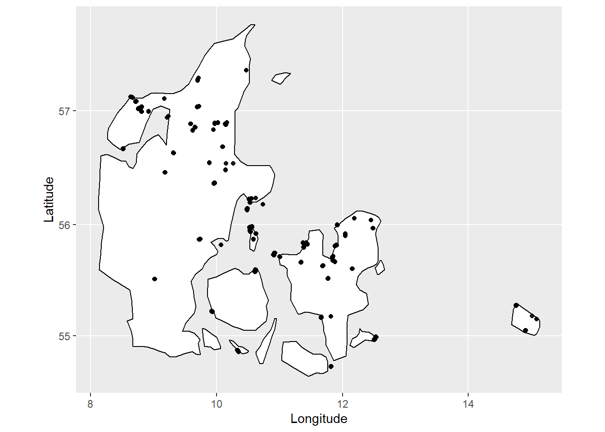
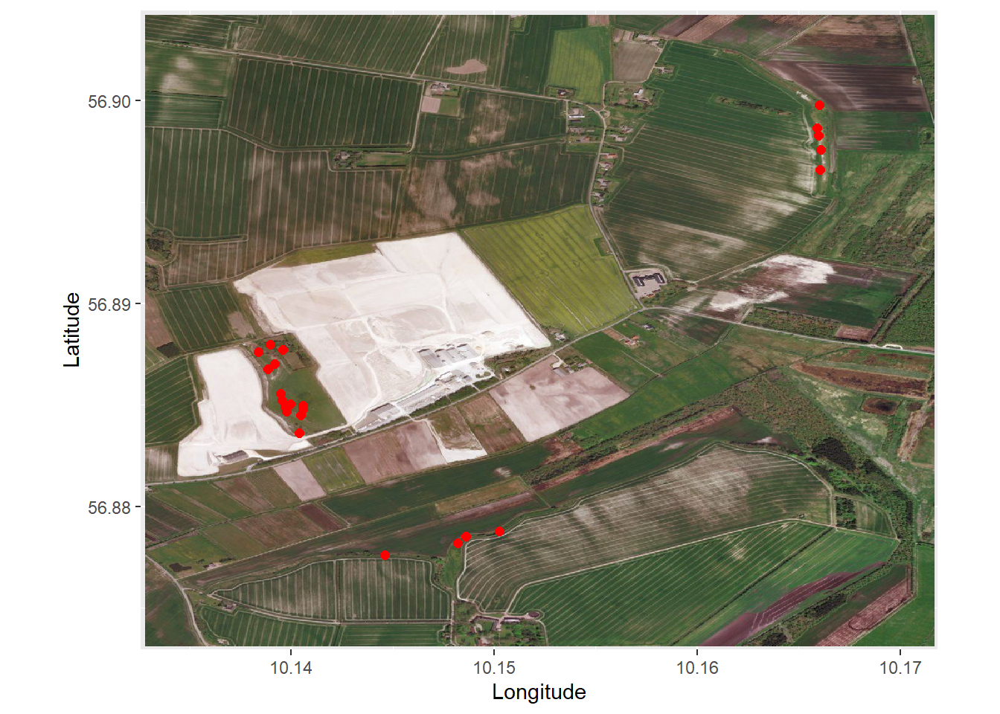
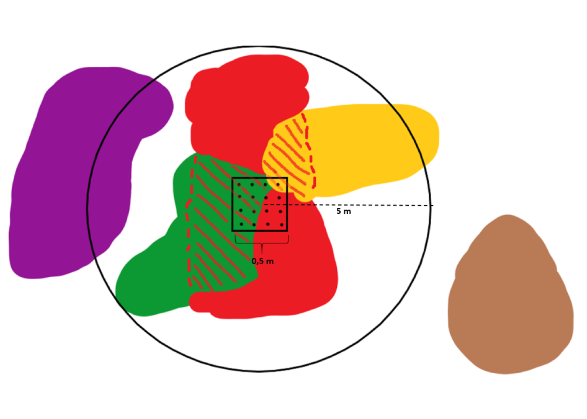

Last updated: 2021-05-16
Checks: 7 0
Knit directory: DataProject - commit docs/
This reproducible R Markdown analysis was created with workflowr (version 1.6.2). The Checks tab describes the reproducibility checks that were applied when the results were created. The Past versions tab lists the development history.
Great! Since the R Markdown file has been committed to the Git repository, you know the exact version of the code that produced these results.
Great job! The global environment was empty. Objects defined in the global environment can affect the analysis in your R Markdown file in unknown ways. For reproduciblity it’s best to always run the code in an empty environment.
The command set.seed(20210322) was run prior to running the code in the R Markdown file. Setting a seed ensures that any results that rely on randomness, e.g. subsampling or permutations, are reproducible.
Great job! Recording the operating system, R version, and package versions is critical for reproducibility.
Nice! There were no cached chunks for this analysis, so you can be confident that you successfully produced the results during this run.
Great job! Using relative paths to the files within your workflowr project makes it easier to run your code on other machines.
Great! You are using Git for version control. Tracking code development and connecting the code version to the results is critical for reproducibility.
The results in this page were generated with repository version bd74b25. See the Past versions tab to see a history of the changes made to the R Markdown and HTML files.
Note that you need to be careful to ensure that all relevant files for the analysis have been committed to Git prior to generating the results (you can use wflow_publish or wflow_git_commit). workflowr only checks the R Markdown file, but you know if there are other scripts or data files that it depends on. Below is the status of the Git repository when the results were generated:
Ignored files:
Ignored: .Rproj.user/
Untracked files:
Untracked: figure/Animation.Rmd/unnamed-chunk-11-1.gif
Note that any generated files, e.g. HTML, png, CSS, etc., are not included in this status report because it is ok for generated content to have uncommitted changes.
These are the previous versions of the repository in which changes were made to the R Markdown (analysis/Introduction.Rmd) and HTML (docs/Introduction.html) files. If you’ve configured a remote Git repository (see ?wflow_git_remote), click on the hyperlinks in the table below to view the files as they were in that past version.
| File | Version | Author | Date | Message |
|---|---|---|---|---|
| html | 82bea2a | GitHub | 2021-05-16 | Add files via upload |
| Rmd | ff0cd9f | GitHub | 2021-05-16 | Add files via upload |
Many methods for estimating the species diversity within an area have been proposed in the literature, and which ones are used depends on the data available. For example, a common diversity measure is “Species richness” that is a count of the number of species present in a given location – irrespective of whether a species is common or rare. To include information on the abundance of individual species in the diversity measure, the Shannon index is a frequently used estimate, which account not only for the presence of a species but also its abundance (measured either as number of individuals or for plants often as cover, i.e. how much of the ground area is covered by a given species).
While the latter measure (Shannon) often will give a better estimate of the diversity in a location, it requires available data of not only presence of a species but also of its abundance. In reality, such data are collected as samples of smaller areas meant to represent a larger location. In smaller areas, the abundance of each species present may be well sampled, but rarely do smaller areas contain all species present in the location. In this vignette, we will propose a new method with the goal to combine cover (abundance) data often collected in smaller samples, with presence/absence data that are often collected over larger areas but lack the information of individual speceis’ abundance. Both types of data contain important information about the area that we would like to use to obtain better diversity measures for a nature area.
We will be working with a subset of the Danish national survey NOVANA dataset as examples to show how this new method can be applied. Further informations about the the NOVANA can be found at https://novana.au.dk/. The NOVANA datasets consist of information from different “sites” across Denmark. Each site is an area with some tertiary habitat. Below we have plotted all the sites with tertiary habitat “kalkoverdrev” from the year of 2009 that were included in the NOVANA dataset.

Within each site a number of “plots” are placed. It is data from these plots that we will be studying in this vignette. Below we zoom in on a single site. The red dots is intended to visualize the plots in this specific site

Each plot consists of presence/absence data, cover data and a dataset including other metrics of the plot such as pH value of the soil in the plot. A plot is given by a circle with a radius of 5 meters. For each species included in the NOVANA dataset the presence/absence data for a plot keeps information on whether the species is found within the circle or not. This is indicated by a binary variable with found = 1.
In the center of the circle is a square with side length of 0.5 meters. Within this square the cover of each present species is projected down on the surface. A number of pins are placed uniformly onto the projection. The cover data for each species is then the proportion of pins each it is hit by. Thus, the cover data is a sample of the 2 dimensional projection of each species down on the surface. In the NOVANA dataset 16 pins are placed uniformly within the square.
This is called the pinpoint-method and is an estimate of the abundance of a species in the plot. However, this is only a small sample of the entire plot. As mentioned earlier this pinpoint-method may estimate the abundance of species within the square well, but it is unlikely that each species present in the plot is also present in the square.
As the presence/absence data and cover data are at the center of this vignette we have made the following simple illustration to highlight the characteristics of the two data types described above.

Each colour represent a single species, thus, we have a purple, brown, red, green and yellow species. Following the drawing we get the following cover and presence/absence data for each species
| Presence/absence data | Cover data | |
|---|---|---|
| Brown species | 0 | 0 |
| Purple species | 1 | 0 |
| Red species | 1 | 16 |
| Yellow species | 1 | 1 |
| Green species | 1 | 9 |
It is possible for multiple species to overlap and for a pin to hit more than one species. We have indicated this by the red species overlapping the green and yellow species. In the example the red species is hit by all 16 pins. Again we note that we can have the information that a species is present in the plot, but that we don’t have any estimate of its cover within the plot as it is not present within the small square. This is shown with the purple species in this case. Below is a bit larger example of what cover and presence/absence datasets could look like. These datasets will later be used as mini examples to show how the method we create works
| Species 1 | Species 2 | Species 3 | Species 4 | Species 5 | Species 6 | Species 7 | Species 8 | Species 9 | |
|---|---|---|---|---|---|---|---|---|---|
| Plot 1 | 2 | 0 | 0 | 1 | 0 | 3 | 0 | 0 | 2 |
| Plot 2 | 0 | 0 | 0 | 0 | 0 | 0 | 0 | 0 | 0 |
| Plot 3 | 5 | 0 | 1 | 10 | 0 | 11 | 7 | 16 | 0 |
| Plot 4 | 0 | 2 | 1 | 9 | 3 | 0 | 4 | 9 | 1 |
| Plot 5 | 1 | 0 | 16 | 0 | 0 | 14 | 0 | 0 | 11 |
| Plot 6 | 0 | 1 | 0 | 0 | 0 | 1 | 1 | 0 | 0 |
| Plot 7 | 16 | 10 | 2 | 7 | 0 | 13 | 0 | 9 | 5 |
| Species 1 | Species 2 | Species 3 | Species 4 | Species 5 | Species 6 | Species 7 | Species 8 | Species 9 | |
|---|---|---|---|---|---|---|---|---|---|
| Plot 1 | 1 | 1 | 0 | 1 | 0 | 1 | 1 | 0 | 1 |
| Plot 2 | 0 | 1 | 0 | 0 | 0 | 0 | 0 | 0 | 0 |
| Plot 3 | 1 | 0 | 1 | 1 | 0 | 1 | 1 | 1 | 0 |
| Plot 4 | 0 | 1 | 1 | 1 | 1 | 0 | 1 | 1 | 1 |
| Plot 5 | 1 | 0 | 1 | 0 | 0 | 1 | 0 | 0 | 1 |
| Plot 6 | 0 | 1 | 0 | 0 | 0 | 1 | 1 | 0 | 0 |
| Plot 7 | 1 | 1 | 1 | 1 | 1 | 1 | 0 | 1 | 1 |
Once again, the intention of this vignette is to come up with a method to combine the two datatypes; cover data and presence/absence.
sessionInfo()R version 4.0.3 (2020-10-10)
Platform: x86_64-w64-mingw32/x64 (64-bit)
Running under: Windows 10 x64 (build 19042)
Matrix products: default
locale:
[1] LC_COLLATE=English_United Kingdom.1252
[2] LC_CTYPE=English_United Kingdom.1252
[3] LC_MONETARY=English_United Kingdom.1252
[4] LC_NUMERIC=C
[5] LC_TIME=English_United Kingdom.1252
attached base packages:
[1] grid stats graphics grDevices utils datasets methods
[8] base
other attached packages:
[1] png_0.1-7 sp_1.4-4 maps_3.3.0
[4] MASS_7.3-53 magick_2.7.1 OpenStreetMap_0.3.4
[7] kableExtra_1.3.4 forcats_0.5.0 stringr_1.4.0
[10] dplyr_1.0.2 purrr_0.3.4 readr_1.4.0
[13] tidyr_1.1.2 tibble_3.0.4 ggplot2_3.3.2
[16] tidyverse_1.3.0 workflowr_1.6.2
loaded via a namespace (and not attached):
[1] httr_1.4.2 jsonlite_1.7.1 viridisLite_0.3.0 modelr_0.1.8
[5] assertthat_0.2.1 highr_0.8 blob_1.2.1 cellranger_1.1.0
[9] yaml_2.2.1 pillar_1.4.6 backports_1.1.10 lattice_0.20-41
[13] glue_1.4.2 digest_0.6.25 promises_1.1.1 rvest_0.3.6
[17] colorspace_1.4-1 htmltools_0.5.0 httpuv_1.5.5 pkgconfig_2.0.3
[21] broom_0.7.2 raster_3.4-5 haven_2.3.1 scales_1.1.1
[25] webshot_0.5.2 svglite_2.0.0 whisker_0.4 later_1.1.0.1
[29] git2r_0.28.0 farver_2.0.3 generics_0.0.2 ellipsis_0.3.1
[33] withr_2.3.0 cli_2.1.0 magrittr_1.5 crayon_1.3.4
[37] readxl_1.3.1 evaluate_0.14 ps_1.4.0 fs_1.5.0
[41] fansi_0.4.1 xml2_1.3.2 tools_4.0.3 hms_0.5.3
[45] lifecycle_0.2.0 munsell_0.5.0 reprex_0.3.0 compiler_4.0.3
[49] systemfonts_1.0.1 rlang_0.4.8 rstudioapi_0.11 labeling_0.4.2
[53] rmarkdown_2.4 gtable_0.3.0 codetools_0.2-16 DBI_1.1.0
[57] R6_2.4.1 lubridate_1.7.9 knitr_1.30 rgdal_1.5-23
[61] rprojroot_1.3-2 rJava_0.9-13 stringi_1.5.3 Rcpp_1.0.5
[65] vctrs_0.3.4 mapproj_1.2.7 dbplyr_1.4.4 tidyselect_1.1.0
[69] xfun_0.18